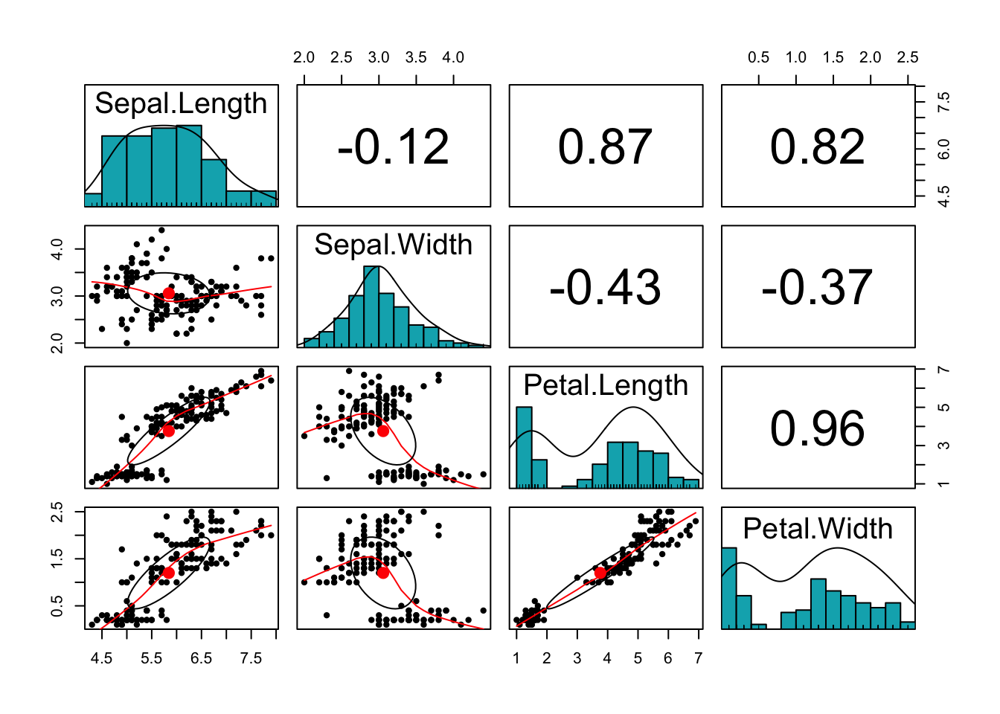
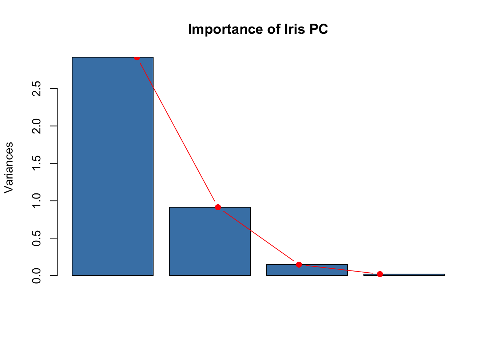
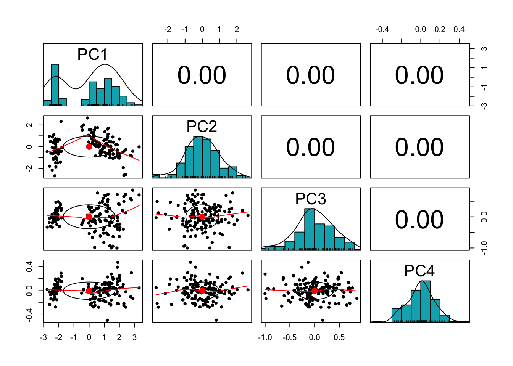
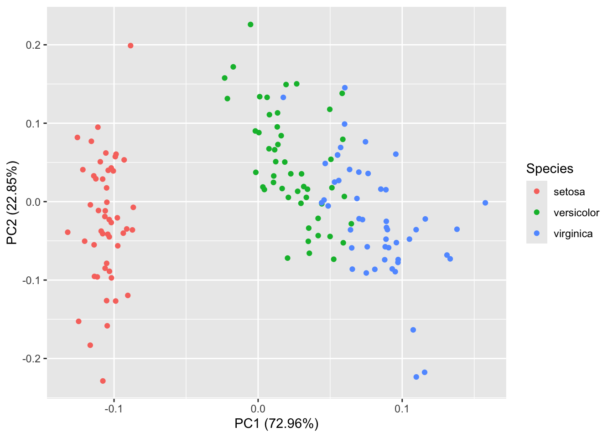
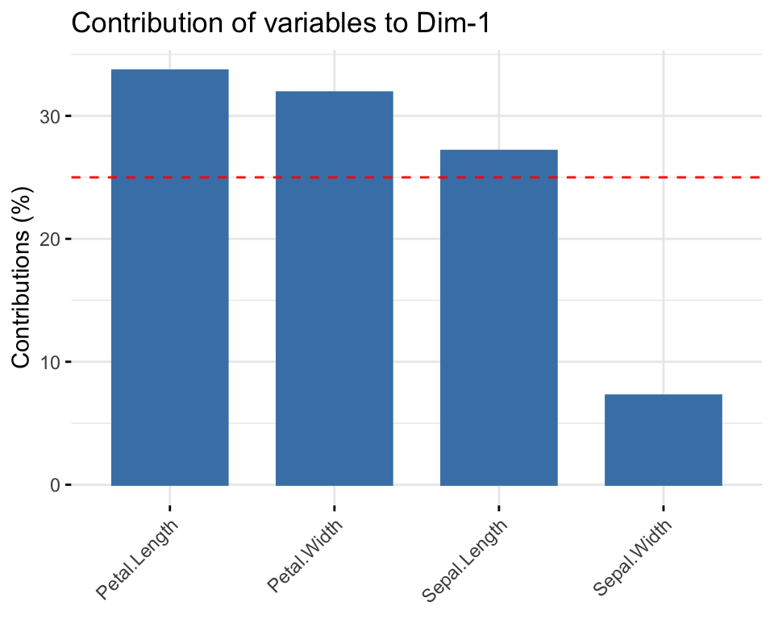
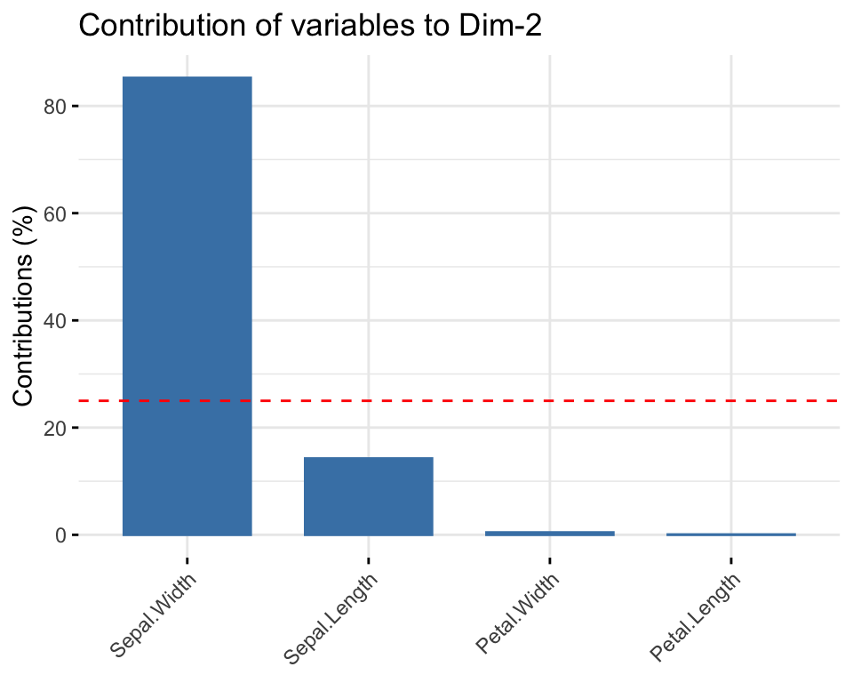
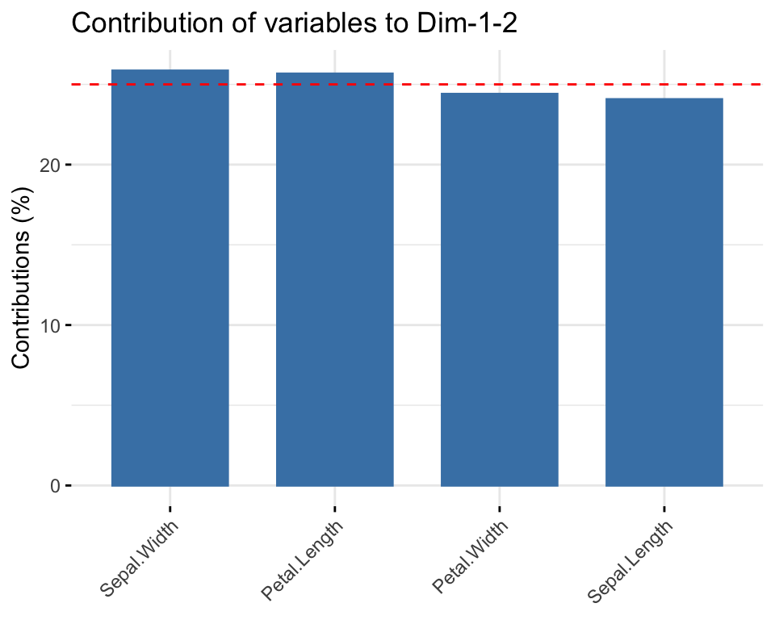
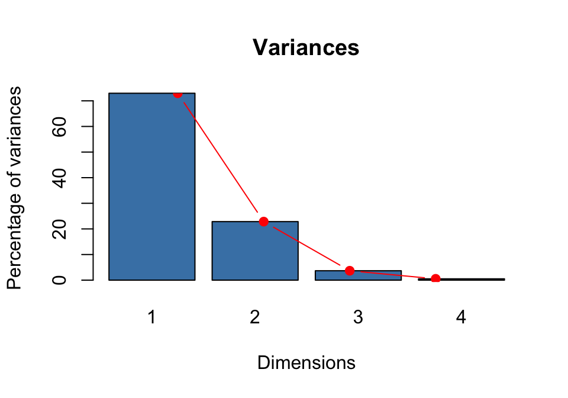

Principal component analysis (PCA) is a technique that produces a smaller set of uncorrelated variables from a larger set of correlated variables. This allows us to visualize, explore, and discover hidden features of the data set. It is also very useful to perform a special type of multilinear regression (see Principal Components Regression). Here we explore how to perform PCA using R, how to read and visualize the output, as well as good practices and how to avoid pitfalls. For a more theoretical viewpoint on PCA, you are referred to the lecture notes.
In R, PCA is performed using either princomp() or prcomp() (the latter being the preferred method).
Iris data
Let us put this into practice with the Iris data set. You get the data in R by typing data(iris) in the console (the data set is also on Blackboard in a csv file iris.csv).
We begin by reading the data into R and printing out the first six rows of the data.
We can also look at the summary statistics of the numerical variables:
summary(iris[,-5])
Sepal.Length Sepal.Width Petal.Length Petal.Width
Min. :4.300 Min. :2.000 Min. :1.000 Min. :0.100
1st Qu.:5.100 1st Qu.:2.800 1st Qu.:1.600 1st Qu.:0.300
Median :5.800 Median :3.000 Median :4.350 Median :1.300
Mean :5.843 Mean :3.057 Mean :3.758 Mean :1.199
3rd Qu.:6.400 3rd Qu.:3.300 3rd Qu.:5.100 3rd Qu.:1.800
Max. :7.900 Max. :4.400 Max. :6.900 Max. :2.500
Finally, we can plot a scatter plot matrix using pairs.panels function in the psych package:
#install.packages('psych')library(psych)pairs.panels(iris[,-5],method ="pearson", # correlation methodhist.col ="#00AFBB",density =TRUE, # show density plotsellipses =TRUE# show correlation ellipses )

What can you say about the plot? Do the variables share sufficient information to warrant redundancy?
You can see that the Petal variables are highly correlated (correlation =0.96). They are also highly correlated with the Sepal length variable. This implies that the three variables share redundant information, so the use of PCA can remove this redundancy, thereby reducing the dimension of the data.
Let us explore how the function prcomp() can help us with dimension reduction:
dat <- iris[,-5]pr.out <-prcomp(dat, scale =TRUE)names(pr.out)
[1] "sdev" "rotation" "center" "scale" "x"
summary(pr.out)
Importance of components:
PC1 PC2 PC3 PC4
Standard deviation 1.7084 0.9560 0.38309 0.14393
Proportion of Variance 0.7296 0.2285 0.03669 0.00518
Cumulative Proportion 0.7296 0.9581 0.99482 1.00000
We find here five quantities of interest. The most important are sdev and rotation.
This matrix has four columns, called \(PC1\), \(PC2\), and so on. They represent the principal components of our data set, i.e. a new basis of the data space that explains better the variability of the data. The coefficients (i.e. the numbers in each column) are called the loadings, so you will find the terminology loading vector of the principal component PC1 to mean the vector underlying PC1.
Observe: the loading vectors are pairwise orthogonal, and in fact orthonormal (in addition to being orthogonal, each one has Euclidean norm 1). Let us check this:
PC <-function(i){pr.out$rotation[,i]}PC(1)%*%PC(2)
[,1]
[1,] 9.714451e-17
PC(1)%*%PC(1)
[,1]
[1,] 1
PC(4)%*%PC(4)
[,1]
[1,] 1
How exactly are principal components better in capturing the data variability? By design (see lectures), \(PC1\) spans the direction that captures the biggest proportion of variance in the observations, \(PC2\) is chosen among all the vectors that are orthonormal to \(PC1\) as one spanning the direction that captures the most variance, and so on. The constraint that these vectors are pairwise orthonomal reduces a lot the possible choices.
We can think about this geometrically: \(PC1\) is the closest line to the data points, \(\langle PC1, PC2 \rangle\) the closest plane to the data points, \(\langle PC1, PC2, PC3 \rangle\) the closest 3-dimensional vector space, and so on… More on this in the lectures.
To retain: the most important component is \(PC1\): it is the direction where the data set is more variable.
How do we measure this importance?
pr.var <- pr.out$sdev^2pr.var
[1] 2.91849782 0.91403047 0.14675688 0.02071484
sum(pr.var)
[1] 4
We have then discovered how the quantities given under Importance of components are calculated: they are obtained from the variance of the principal components. We can make a screeplot to visualize this better.
plot(pr.out, col ="steelblue", main="Importance of Iris PC")lines(x =1:4, pr.var, type="b", pch=19, col ="red")

The component \(PC1\) accounts for a large proportion of variance (72.96%), \(PC2\) for some of it, and the other directions are essentially variance free. Geometrically, this means that the points are very close to the plane \(\langle PC1, PC2 \rangle\). It then makes sense to analyze and visualize our data set using this plane. How?
The most natural thing to do is to look at the position of the data points when they get projected onto this plane. The coefficients of the observations in the basis \((PC1, PC2, PC3, PC4)\) are called the scores. They make up the feature denoted by x in the output of prcomp()
pr.out$xsummary(pr.out$x)
Note that the scores of all principal components have mean zero. Why?
Task: Using linear algebra to compute scores
We can compute the scores of a single observation, for example the one corresponding to the first row of our data matrix, by observing that they are obtained by multiplication with the inverse of the rotation matrix. You need to recall how to make a change of basis in linear algebra to make sense of this. The output should look like the following:
To understand how principal components modify our datascape, we can look at the scatterplot matrix obtained by replacing the original data set with the data set of principal component scores.
pairs.panels(pr.out$x,method ="pearson", # correlation methodhist.col ="#00AFBB",#hexadecimal colour codedensity =TRUE, # show density plotsellipses =TRUE# show correlation ellipses )

The variables are now uncorrelated! This is not a coincidence, as we have seen in the lectures.
To visualize the scores of the first two principal components we don’t have to compute them one by one. The biplot() command can be used, but we can achieve a better visualization using autoplot() (from the ggfortify library)
#install.packages('ggfortify')library(ggfortify)
Loading required package: ggplot2
Attaching package: 'ggplot2'
The following objects are masked from 'package:psych':
%+%, alpha
autoplot(pr.out, data = iris, colour ="Species") #, label = TRUE

Using the option loadings, we can add to this plot the projections of the original variables (Sepal Length, Sepal Width, etc.) on the plane \(\langle PC1, PC2 \rangle\). This is a good way to visualize the loading vectors.
Here we can see how much the original variables contribute to the two first principal components. Petal length, Petal width and Sepal length are the features contributing the most to \(PC1\). Sepal width is the feature that mostly contribute to \(PC2\).
A clearer way to see how each of the original variables contribute to the new dimensions using the figures below:
library("factoextra")
Welcome! Want to learn more? See two factoextra-related books at https://goo.gl/ve3WBa
# Contributions of variables to PC1fviz_contrib(pr.out, choice ="var", axes =1, top =4)

# Contributions of variables to PC2fviz_contrib(pr.out, choice ="var", axes =2, top =4)

The plot below simultaneously shows the strength of each of the original variables on both PC1 and PC2.
fviz_contrib(pr.out, choice ="var", axes =1:2, top =4)

We can produce a variety of biplots. Below is another one.
Here we were lucky because all features were expressed in the same unit (cm), but it may get worse: by changing units, variance changes too: for example if Sepal Length were to be expressed in meters, that would significantly reduce its standard deviation!
We want PCA to be independent of rescaling, so scaling the variables will help us with this issue. If the units are the same and the variances close to each other it is less problematic to not scale the data. This has the advantage of avoiding a rather clumsy manipulation of the data.
Is there any situation in which it is advisable not to normalize? Yes! When the variance of the original features is important, or if one wants to give more importance to those features that have more variability. We’ll see an example in the lecture.
Step-by-step analysis of iris data- Eigendecomposition
All that we have done so far was based on the use of a ready made use of an already packaged function, prcomp(), in R. We can use our linear algebra skills to carry out the analysis.
Let \(\Sigma\) be the covariance matrix of data set \(x\) with ordered eigenvalue-eigenvector pairs \((\lambda_j, \phi_j), j = 1, \ldots, p\). Then
the principal components are \[z_{j} =\phi_{j}^{T}x = \phi_{j1}x_{1} + \phi_{j2}x_{2} + \ldots \phi_{jp}x_{p}\]
barplot(eig2[, 2], names.arg=1:nrow(eig2),#use the names of the row for each bar main ="Variances",xlab ="Dimensions",ylab ="Percentage of variances",col ="steelblue")# Add connected line segments to the plotlines(x =1:nrow(eig2), eig2[, 2], type="b", pch=19, col ="red")

Task: Using SVD
Now, as a small exercise, try to obtain the factor loadings using Singular Value Decomposition (SVD), which is the method that the prcomp() function in R is based on. Compare your loadings with those obtained via SVD.
Solution to Task:
Reconstruction Error
We can reconstruct the data matrix using the principal components and verify the reconstruction error. Assuming we retained all four PCs, we can compute the reconstruction errors using the following code:
As you can see, the reconstruction error is very small (close to 0) because all the principal components are used. This indicates that no variance is lost during the reconstruction. If fewer components are retained, the error will reflect the information loss due to dimensionality reduction.
Task: Reconstruction Error
Update the code above to compute the reconstruction errors when 2 and 3 PCs are retained. Use the following steps as a guide:
Compare the reconstruction errors when 2 and 3 PCs are retained. How do these errors relate to the cumulative variance explained by the retained components? Can you explain the results?